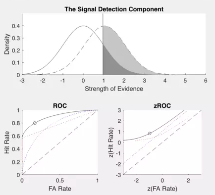

Resource
-

A MATLAB app that visualizes how computational models of human memory manifest in behavioral data through Receiver Operating Characteristics curves, enabling students to explore model components without requiring coding experience. More information can be found at our page for Teaching Computation with MATLAB Workshop.